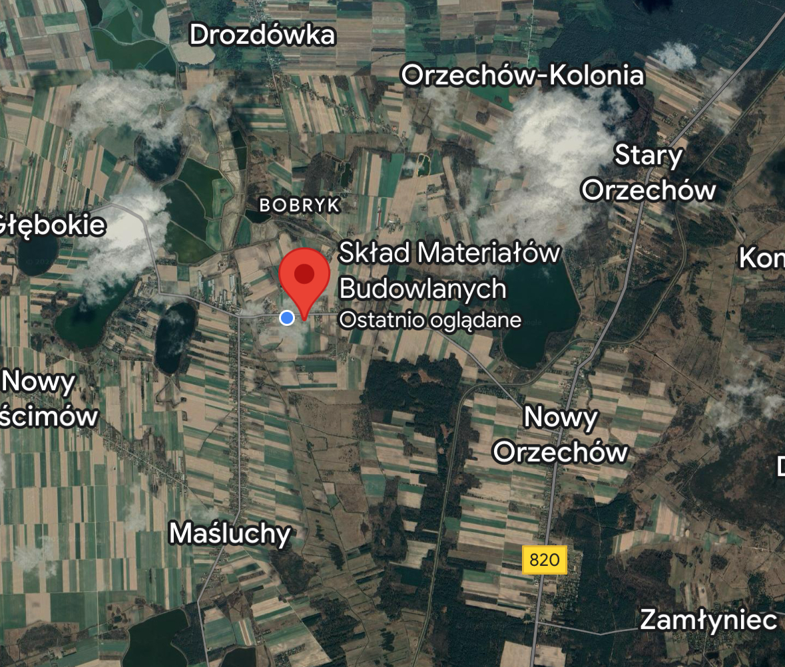

Stacje oferują pełną gamę usług od sprzedaży paliwa, przez własny koncept kawiarniano-gastronomiczny Caffe, sklep i ofertę kierowaną do klientów biznesowych. Nasze stacje spełniają jednolite standardy obsługi i jakości. Gwarancją jakości paliwa na stacjach w barwach jest niezależny program badania paliw.
Oferta, którą posiada nasza wypożyczalnia narzędzi i sprzętu, została skonstruowana na bazie wiedzy o tym, czego potrzebują klienci. Udostępniamy na wynajem sprzęty dla amatorów i profesjonalistów, narzędzia, maszyny, które przydają się podczas pielęgnacji ogrodu, remontu oraz budowy domu.
Oferujemy szeroki zakres usług budowlanych i transportowych.
Od wielu lat zajmujemy się obrotem zbożami. Doświadczeni pracownicy, pewni odbiorcy i rozsądna polityka finansowa gwarantują bezpieczeństwo zawieranych z nami umów. Przez cały rok prowadzimy skup zbóż i innych płodów rolnych, m.in. pszenicy, kukurydzy czy owsa. Organizujemy sprawne odbiory, dzięki rozbudowanej siatce spedycji. Skontaktuj się z nami i sprawdź, jaką ofertę mamy dla Ciebie!
Przez cały rok udzielamy informacji i skupujemy:
Specjalizujemy się w dystrybucji materiałów budowlanych:
Kompleks Handlowy to przede wszystkim zintegrowana usługa: nie tylko dostarczamy produkty najwyższej jakości pochodzące od światowych producentów, ale także gwarantujemy własną i terminową dostawę zamówionych towarów za pośrednictwem samochodów ciężarowych, z których część wyposażona jest w HDS.
Wykwalifikowani doradcy techniczni z chęcią udzielą dalszych informacji na temat oferty – zapraszamy!
Kompleks Handlowy Mazurek w swojej ofercie składu budowlanego prezentuje szeroki wybór w asortymencie budowlanym zawsze pod ręką. Kupuj przez telefon lub na miejscu. Świadczymy usługi transportu oraz wypożyczalnię sprzętu budowlanego.
Stacja Paliw Płynnych Jarosław Mazurek
NIP 7140000653
REGON 004183210
Adres:
Stary Uścimów 107, 21-109 Stary Uścimów
Telefony:
691-700-003
691-800-009
Email:
mazurek38@wp.pl